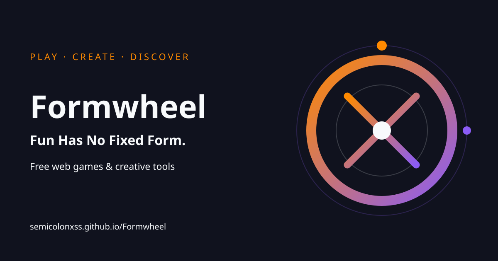

PLAY
Play original browser games
Play, create, experiment, connect, learn and discover with free browser games and creative tools.

Find something that fits your mood →
Play original browser games
Make music and your own content
Try unusual mechanics and ideas
Explore ways to play together
Learn through interactive challenges
Find new projects and daily challenges
Choose your own projects. Installation is not required; some online features need an account or connection. Features vary by project and some are still in development.